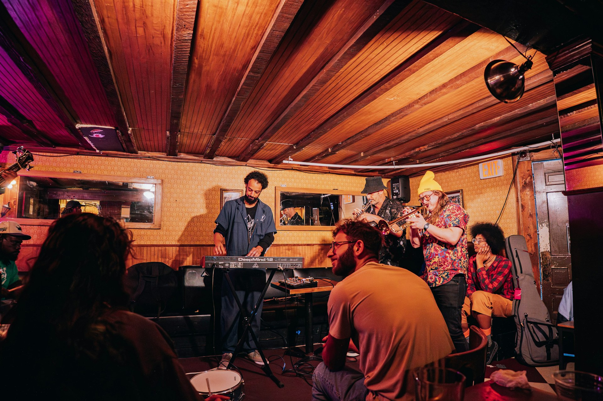
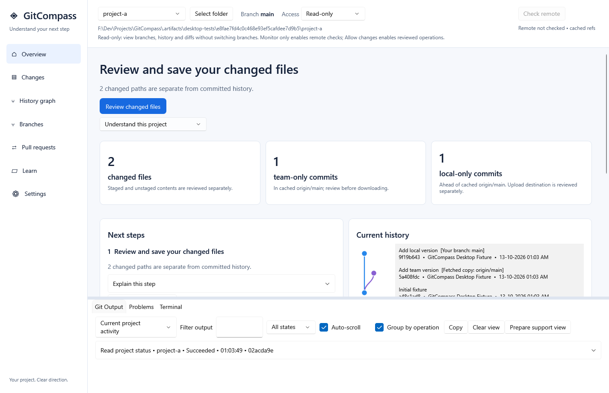
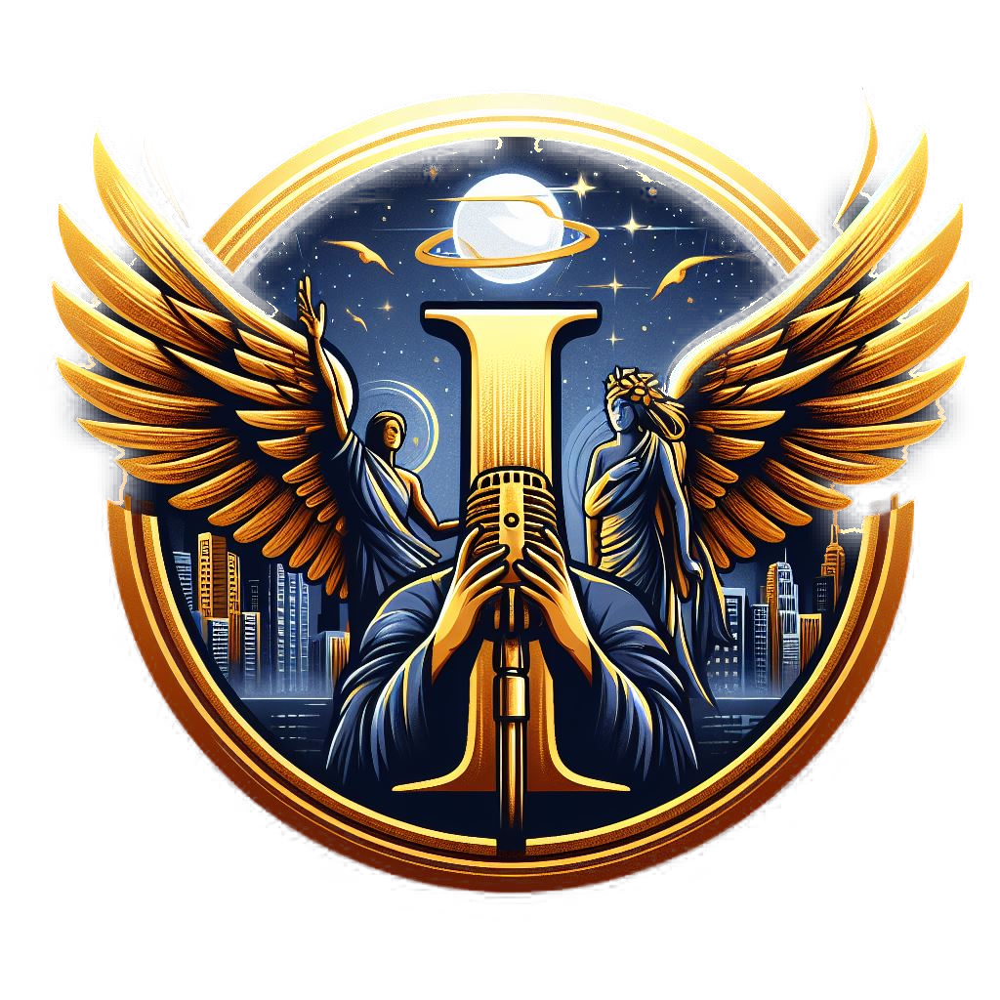

EDGETHE STAGE IS YOURS.LIVE PERFORMANCE / MARKETPLACE
EDGE
A two-sided gig marketplace connecting artists and organisers through structured booking workflows.
ReactTypeScriptFirebase
THE WORK / SELECTED REPOSITORIES
Different platforms. The same curiosity.
Explore the work—and the decisions underneath.
6 projects to explore

EDGETHE STAGE IS YOURS.LIVE PERFORMANCE / MARKETPLACE
A two-sided gig marketplace connecting artists and organisers through structured booking workflows.

DEVELOPER EXPERIENCE / WINDOWS
A native Windows workspace that helps people understand changes, history and their next Git action.

EVERYDAY SYSTEMS / KOLKATA
A Kolkata-focused planner for saved places, trips, route timelines and nightly reminders.

ARTIST IDENTITY / INDEPENDENT MUSIC
An artist site bringing real music, illustration, live moments and direct platform choices together.
MOTION DESIGN / FLUTTER STARTER
An animated expense-tracker starter exploring connected screens, themes and transaction interactions.
OFFLINE-FIRST / ANDROID
An offline-first recovery-tracking MVP with local history, interventions and Android integrations.
Try another technology or clear the filters.